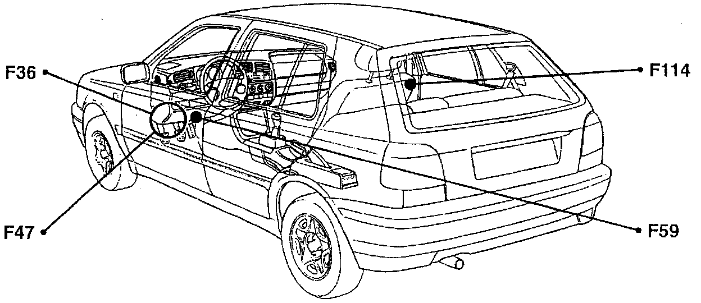
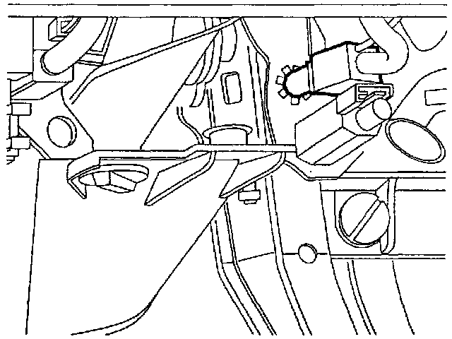

Operation CHARM
: Car repair manuals for everyone.
Home
>>
Volkswagen
>>
1997
>>
GTI (1H1) V6-2.8L (AAA)
>>
Repair and Diagnosis
>>
Cruise Control
>>
Sensors and Switches - Cruise Control
>>
Brake Switch (Cruise Control)
>>
Locations
>>
Brake Vacuum Vent Valve Switch (Cruise Control)
Brake Vacuum Vent Valve Switch (Cruise Control)
F36, F59, F47, F114:

Component Location View
F47:

Component View
F47 Brake vacuum vent valve switch (cruise control)
-
On brake pedal bracket
-
Above brake light switch F